6가지 스타일 · 25개 이미지 파일. 스타일과 개별 이미지를 비교하고, 마음에 드는 파일 ID를 선택하세요. 이미지를 누르면 원본 파일이 열립니다.
C·D는 유료 세트의 공개 미리보기입니다. D는 여러 아이콘이 포함된 팩 소개 이미지이며, 개별 PNG 원본은 아닙니다.
둥근 형태와 부드러운 그림자. 친근하고 밝은 느낌.
MIT · 배포 시 저작권 및 라이선스 고지 유지 · 출처 보기 ↗
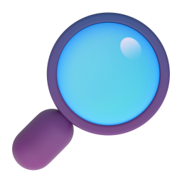
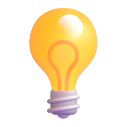
간결한 형태와 선명한 컬러. 무료 PNG 미리보기는 100px.
무료 100px PNG · 실제 사용 시 Icons8 출처 링크 필요. 큰 원본은 별도 라이선스 확인 · 출처 보기 ↗
광택과 투명감이 있는 유리 재질. 공개 미리보기로 스타일 비교.
공개 미리보기 · 선택 검토용. 실제 적용은 유료 구독 라이선스 필요 · 출처 보기 ↗
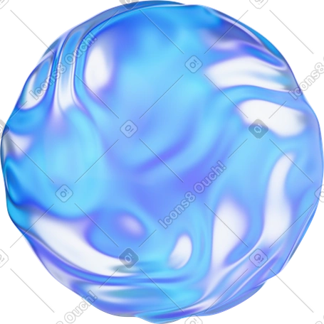
낮은 광택과 파스텔 색감. 개별 원본 대신 공개 팩 미리보기 4장.
공개 팩 미리보기 · 선택 검토용. 실제 PNG 원본은 구매/멤버십 라이선스 필요 · 출처 보기 ↗
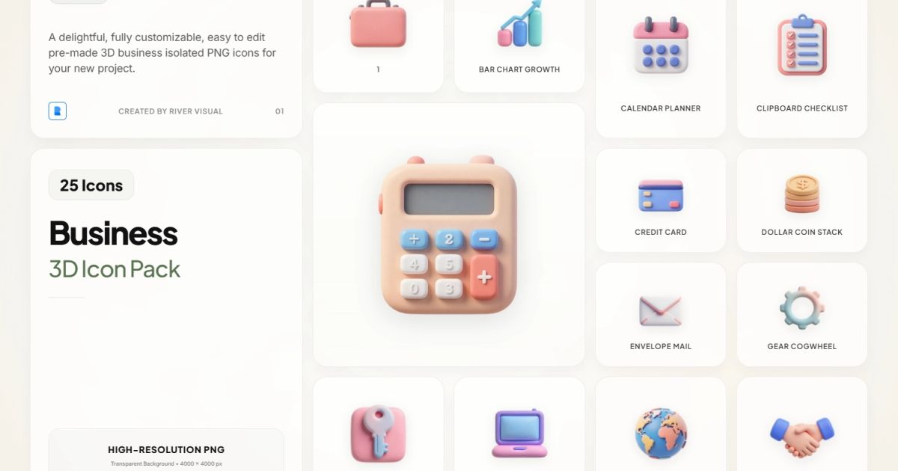
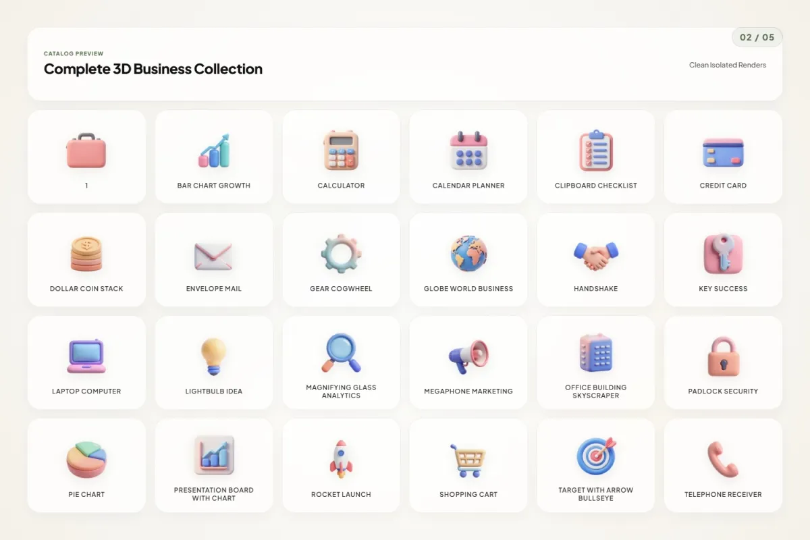
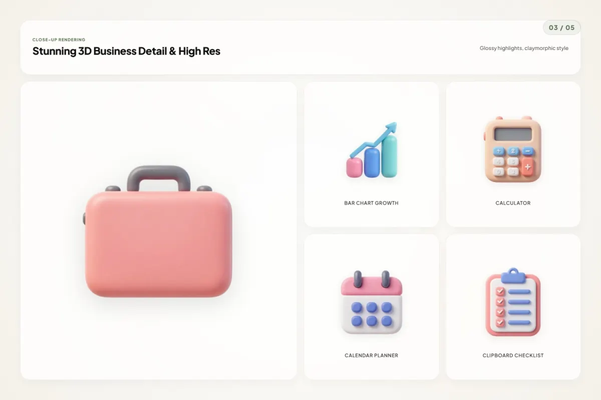
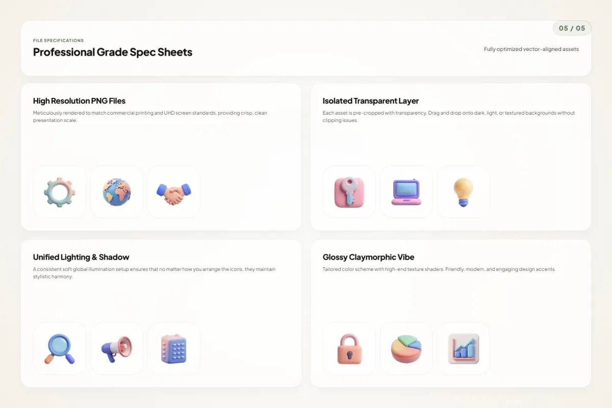
핑크·퍼플·오렌지가 섞인 매끈한 재질.
V1 CC0 · 개인 및 상업 프로젝트 사용 가능 · 출처 보기 ↗
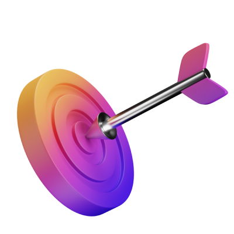
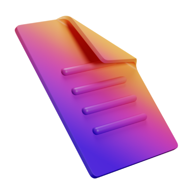
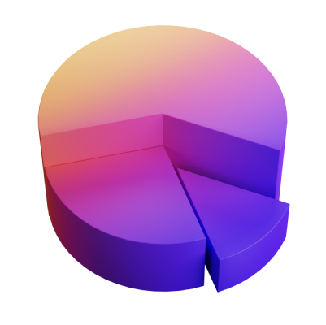
짙은 금속 바디와 금색 포인트. 묵직한 느낌.
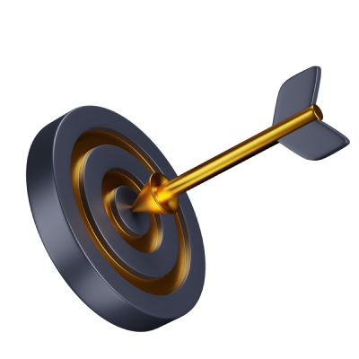
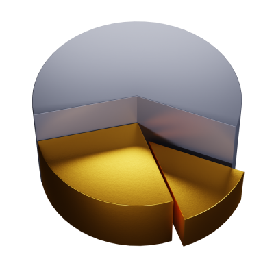
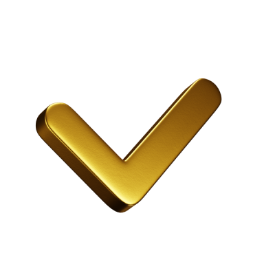